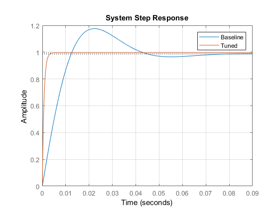

Contents
% %% Joshua Andrews - ECE414 - PID Tuner HW % % %% Part 1, P control % % Testing the PID tuner and PID tune function for a P controller % clear all; clc; % G = tf(40, [1 30 200]) % % %% Find the baseline matlab generated P controller % Cp = pidtune(G, 'P'); % % %% Run PID Tuner with plant tf. and the baseline Cp % % Using the GUI the response time can be changed to alter the Kp parameter. % % Because we are looking at minimizing %OS and controller effort, the % % contoller effort can be plotted alongside the step response of the % % system using the tools at the top of the GUI. The controller parameters % % is displayed by clicking the button at the top and the controller can be % % exported to the workspace. % % %% Finding the minimum controller effort % % Using the slider, the lowest %OS and controller effort occured when the % % response time was as slow as possible. The lowest %OS was found by % % watching the parameters while the lowest controller effort was found by % % displaying the peak by right clicking on the controller effort graph. % % After tuning export it to the workspace as C. % % Tune = pidTuner(G, Cp) % waitfor(Tune); % % %% Export the tuned controller % % The best value of Kp was found to be 5 as it minimzed both parameters. % % The controller effort had a peak of 5 and the %OS was 2.84% % % % Baseline controller effort and system transfer functions % Up = Cp/(1+(Cp*G)); % Tp = (Cp*G)/(1+(G*Cp)); % % % Tuned controller effort and system transfer functions % Utp = C/(1+(C*G)); % Ttp = (C*G)/(1+(G*C)); % % %% Ploting the step responses % % Using the transfer functins above the step responses we plotted for each % % figure(1); clf; % step(Tp); % hold on; % step(Ttp); % grid on; % legend('Baseline', 'Tuned'); % title('System Step Response'); % % figure(2); clf; % step(Up); % hold on; % step(Utp); % grid on; % legend('Baseline', 'Tuned'); % title('Contoller Effort Step Response');
G =
40
----------------
s^2 + 30 s + 200
Continuous-time transfer function.
In the graphs above you can see that by only focusing on those two parameters we got a much better response with a longer rise time, which is still fairly low, with the tuned controller. The peak controller effort also drops from 21 to 5
Part 2 - PD Controller
By using the step s above we can do the same process for the PI controller
The controller effort transfer function is improper for any value of Kd other than 0. This results in an ideal controller that is not implementable in the real world. The controller would have to supply impluse outputs and the plant would have to handle impulse inputs. But in order to get values for Kp and Kd, the controller was tuned based on %OS alone. This occured when both sliders were taken all the way to the right. (Fast response, robust transient).
Cpd = pidtune(G, 'PD'); Tune = pidTuner(G, Cpd); waitfor(Tune); disp('Parameters from PID Tune'); disp('Kp = '); disp(C.Kp); disp('Kd = '); disp(C.Kd); % Baseline controller effort and system transfer functions disp('Baseline Controller Effort Transfer Function'); Upd = Cpd/(1+(Cpd*G)) disp('Baseline System Transfer Function'); Tpd = (Cpd*G)/(1+(G*Cpd)) % Tuned controller effort and system transfer functions disp('Tuned Controller Effort Transfer Function'); Utpd = C/(1+(C*G)) disp('Tuned System Transfer Function'); Ttpd = (C*G)/(1+(G*C)) figure(3); clf; step(Tpd); hold on; step(Ttpd); grid on; legend('Baseline', 'Tuned'); title('System Step Response');
Parameters from PID Tune
Kp =
875.0647
Kd =
35.3543
Baseline Controller Effort Transfer Function
Upd =
2.656 s^3 + 419 s^2 + 1.071e04 s + 6.787e04
-------------------------------------------
s^2 + 136.2 s + 1.377e04
Continuous-time transfer function.
Baseline System Transfer Function
Tpd =
106.2 s^3 + 1.676e04 s^2 + 4.285e05 s + 2.715e06
------------------------------------------------------
s^4 + 166.2 s^3 + 1.806e04 s^2 + 4.405e05 s + 2.755e06
Continuous-time transfer function.
Tuned Controller Effort Transfer Function
Utpd =
35.35 s^3 + 1936 s^2 + 3.332e04 s + 1.75e05
-------------------------------------------
s^2 + 1444 s + 3.52e04
Continuous-time transfer function.
Tuned System Transfer Function
Ttpd =
1414 s^3 + 7.743e04 s^2 + 1.333e06 s + 7.001e06
-----------------------------------------------------
s^4 + 1474 s^3 + 7.873e04 s^2 + 1.345e06 s + 7.041e06
Continuous-time transfer function.
 Using the parameters above the %OS was 0.07%. While the rise time could have been decreased much further, this resulted in a slightly larger overshoot and much more impractical values for Kd and Kp.
% Cpid = pidtune(G, 'PID'); % pidTuner(G, Cpid); % Tpid = Cpid/(1+(Cpid*G)) % % Cpdf = pidtune(G, 'PDF'); % pidTuner(G, Cpdf); % Tpdf = Cpdf/(1+(Cpdf*G)) % % Cpidf = pidtune(G, 'PIDF'); % pidTuner(G, Cpidf); % Tpidf = Cpidf/(1+(Cpidf*G))